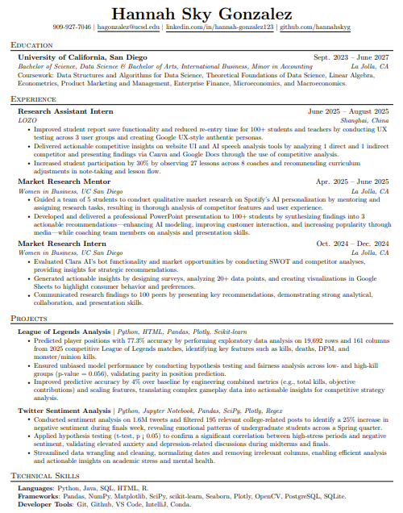

Hobbies


Exploring the world through data and global business
Hi, I'm Hannah Sky Gonzalez! I'm a third-year Data Science & International Business double major at UC San Diego, passionate about connecting numbers with narratives and exploring how data shapes decisions in a global context. Academically, my coursework focuses on data science, business principles, and accounting. In data science, I have learned how to draw meaningful conclusions through computation, data analysis, data visualization, and data modeling. In business, I have developed essential skills to be an effective team member and future business leader. My accounting courses have taught me how to understand and interpret financial statements. Outside of academics, I am a member of three organizations: Data Science Society, Women in Business, and Women in Computing. I have also held mentorship roles, supporting students who are in similar situations to those I have experienced, which I find highly rewarding.
Outside of academics, I love traveling, enjoying matcha, and working out! I've been to over 15 countries, always try the newest café in town, and am on a mission to complete a pull-up!
Click the image to preview my resume:
